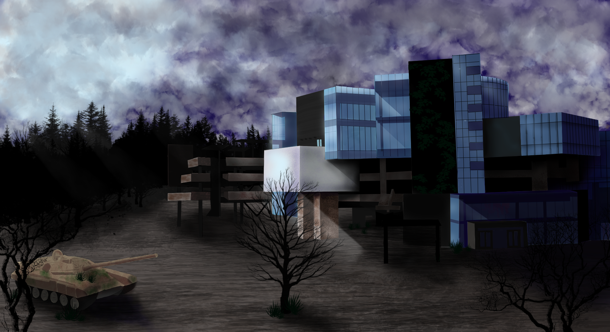

I created this image in GIMM100. For this exercise
I developed skills translating a photograph to a
photoshop image and then stylizing it to create
a post-apocalyptic cityscape
For this exercise I took elements from other images
to create a new unique illustration of my cousin
An exercise in rotoscopy that I created in
adobe animate of my dog, Kenai
This was an in class exercise in character design
so I created an otherworldly toad for an
ongoing project
In GIMM this was my first photoshop project, were
supposed to create a horror movie poster
photobashing two images together to create our
monster
This is concept art for a personal project that I
worked on over the summer